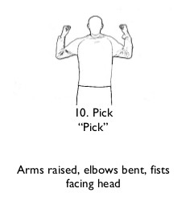
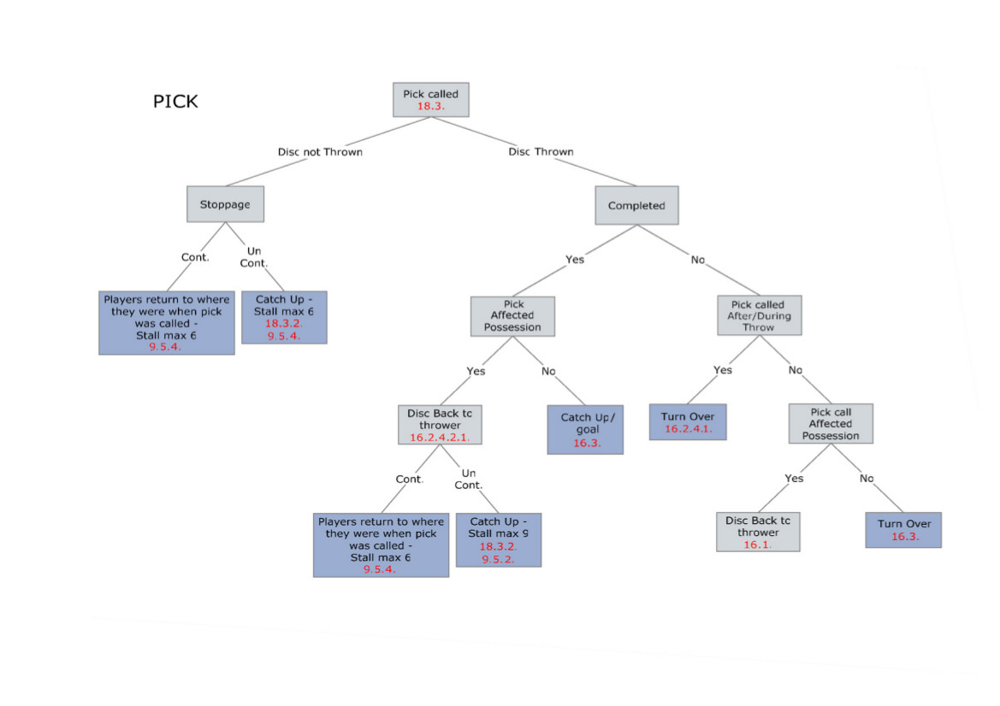

A "pick" is a violation in Ultimate, that is called by a defender when he is screened from getting to the disc.
A screen, in general, is a blocking move by an offensive player to block or obstruct the movement of a defender, to free a teammate to shoot, receive a pass, or drive in to score. In basketball, it is also known as a pick. While this is allowed and commonly used in sports like basketball, a defender in Ultimate can call a Pick.
From #18.3 WFDF Rules :
- If a defensive player is guarding an offensive player and they are prevented from moving towards/with that player by another player, that defensive player may call "Pick"
- Once play has stopped, the obstructed player may move to the agreed position they would have otherwise occupied if the obstruction had not occurred. The disc is returned to the thrower (if the disc was thrown)
Note from the official interpretation :
- A pick should only be called if the obstructed player is within 3 metres of the player they were guarding at the time they were obstructed. However they do not need to be less than 3 metres away at the time of the call because the obstruction may cause this distance to quickly grow before the call can be made.
- A pick cannot be called by the offense.
- A pick should not be called by a defender who was obstructed while attempting to make a play on the disc, that is not related to their ability to move towards/with the player they are guarding (however a defender may call a violation under Rule 12.7 if applicable).
In Ultimate, a player calls a Violation, by either calling "Violation" or the specific name of the violation, "Pick" in this case. The player can also show the hand signal, in the image, when calling a pick.
WFDF has a nice decision diagram illustrating the various scenarios. I'll not go into explaining them in detail, unless something really needs to be.
Credits: The images are courtesy WFDF rule books!